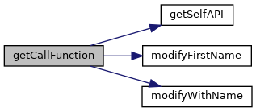
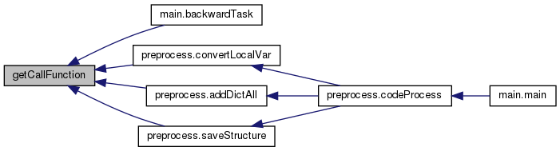
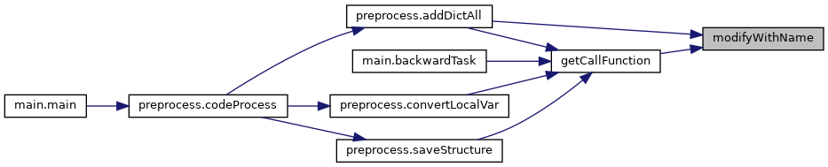

Extract lib API calls from project source code. More...
Functions | |
| def | getCallFunction (filePath, libName) |
| Extract all API calls from a given .py file æ¯�æ¬¡ä¼ è¿›æ�¥ä¸€ä¸ª.py文件，抽å�–所有的调用API. More... | |
| def | getSelfAPI (root, importDict, libName) |
| Extract method calls in a custom class inherited from a lib class è�·å�–ä»�库API继承的自定义类ä¸çš„库API方法调用 More... | |
| def | modifyFirstName (prefix, callName, paraStr, codeLst) |
| Restore the conventional API call path by modifying the first name of the API prefix 通过修改API赋值调用�缀还�完整的API调用路劲 More... | |
| def | modifyWithName (callName, withitemCallName) |
| Restore the conventional API call path in the withitem (including AsyncWith) call form 还�withitemAPI调用的完整API调用路径 More... | |
Detailed Description
Extract lib API calls from project source code.
More details (TODO)
Function Documentation
◆ getCallFunction()
| def getCall.getCallFunction | ( | filePath, | |
| libName | |||
| ) |
Extract all API calls from a given .py file æ¯�æ¬¡ä¼ è¿›æ�¥ä¸€ä¸ª.py文件，抽å�–所有的调用API.
- Parameters
-
filePath The .py file path libName The target lib name (e.g., torch)
- Returns
- A dictionary, where the key is the restored API call path + parameters, the value is the original API call + parameters
- è¿”å›�值是一个å—典，key是还å�Ÿå��çš„API+å�‚数，value是还å�Ÿå‰�çš„API+å�‚æ•°
Definition at line 176 of file getCall.py.


◆ getSelfAPI()
| def getCall.getSelfAPI | ( | root, | |
| importDict, | |||
| libName | |||
| ) |
Extract method calls in a custom class inherited from a lib class è�·å�–ä»�库API继承的自定义类ä¸çš„库API方法调用
- Parameters
-
root The AST node of the parsed project file importDict Module names identified from import statements libName The target lib name (e.g., torch)
- Returns
- list of extracted inherited method calls
Definition at line 20 of file getCall.py.

◆ modifyFirstName()
| def getCall.modifyFirstName | ( | prefix, | |
| callName, | |||
| paraStr, | |||
| codeLst | |||
| ) |
Restore the conventional API call path by modifying the first name of the API prefix 通过修改API赋值调用�缀还�完整的API调用路劲
For example: A=polars() A=A.a(x) A=A.b(y) A=A.a(z) A.a(z)–>A.b(y).a(z)–>A.a(x).b(y).a(z)–>polars.a(x).b(y).a(z) å˜åœ¨çš„异常情况：ä¸é—´å‡½æ•°çš„è¿”å›�值å�¯èƒ½ä¼šæ”¹å�˜
- Parameters
-
prefix Prefix of the API call (e.g., A.a(z), A is the prefix) callName API call item in source code paraStr Parameter string codeLst Source file code list
- Returns
- The conventional API call path
Definition at line 77 of file getCall.py.

◆ modifyWithName()
| def getCall.modifyWithName | ( | callName, | |
| withitemCallName | |||
| ) |
Restore the conventional API call path in the withitem (including AsyncWith) call form 还�withitemAPI调用的完整API调用路径
For example: async with Client("test.mosquitto.org") as client: await client.publish("temperature", payload="25.3") client.publish("temperature", payload="25.3") –> Client("test.mosquitto.org").publish("temperature", payload="25.3")
- Parameters
-
callName API call item in source code withitemCallName A dict stores the alias and its counterpart withitem call name
- Returns
- The conventional API call path
Definition at line 152 of file getCall.py.

Generated by
 1.8.13
1.8.13